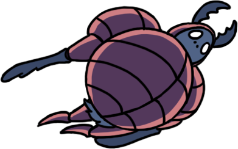
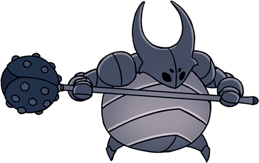

Use the filter buttons below to filter out different bosses based on their
difficulty!
Easy Difficulty are bosses that are generally easier to defeat and
usually encountered by the player earlier on in the game.
Medium Difficulty bosses are more challenging than Easy Difficulty bosses, and often require more
experience and skill from the player to defeat. These types of bosses are usually encountered in the mid-late game.
Hard Difficulty bosses are the most difficult to defeat and are usually encountered in the late game.
They often require a very high level of skill and experience and many trials to master.
The Broken Vessel blocks the path to the Monarch Wings, the Infection reanimating its corpse. When defeated,
the husk of its body reaches out to the Knight before passing on. If hit with the Dream Nail, you face the
Lost Kin, a stronger version of the Broken Vessel that is still infected with Lightseeds. When defeated, the
spirit of the vessel offers the Knight a bow before departing.
Recommended Charms: Quick Focus, Mark of Pride/Longnail (extend reach), Spore Shroom/Defender's Crest (remove Infected Balloon)
Recommended Spells/Other: Vengeful Spirit/Shade Soul Spell (knock-back effect), Desolate Dive/Descending Dark Spell (>damage),
Cyclone Smash (stagger + corner)
Click on me to go back to the filters!

The Mawlek is separated from its kin in the Ancient Basin and can instead be
found off the side of the road at the Forgotten Crossroads. It is driven mad by the Infection and is very
aggressive not just because of the Radiance, but also because of its loneliness.
Recommended Charms: Baldur Shell (Healing), Sharp Shadow (Damage)
Recommended Spells/Other: Cyclone Slash (Light damage to chip away health), Mark of Pride (deal damage while
Mawlek is attacking), & Longnail
Click on me to go back to the filters!

Oro and Mato are the two final bosses of the Pantheon of the Master (the first of the five Pantheons).
They are both Nailmasters. At first, Oro appears alone (Phase 1), but is joined by Mato once he has taken 500 damage (Phase 2).
There are no differences between them other than their own signature Nail Arts and the fact that Mato's
attack cooldown is a second shorter than Oro's. Sometimes one Brother will be idle while the other is preparing to attack
or attacking.
Recommended Charms: Shape of Unn & Quick Focus (safe healing), Shade Cloak & Sharp Shadow (defense against Double Slash)
Recommended Spells/Other: Howling Wraiths/Abyss Shriek (hitting during Jump Slash), Vengeful Spirit/Shade Soul (mobility, attack),
Desolate Dive/Descending Dark (response to attack, esp Jump Slash)
Click on me to go back to the filters!

The Crystal Guardian was once a miner on Crystal Peak, similar to Myla. He died due to the Infection
and his corpse was reanimated by it. He is first found near a bench, appearing dead but preventing the Knight
from resting on the bench. Once struck, he gets up and the fight begins. The Crystal Guardian also has a second faster
and stronger form, known as the Enraged Guardian. Following him up to the ceiling where he escapes after defeat using Monarch
Wings unlocks this second phase of the fight.
Recommended Charms: None
Recommended Spells/Other: Desolate Dive/Descending Dark & Vengeful Spirit/Shade Soul (for safe damage),
Howling Wraiths/Abyss Shriek (more damage but riskier)
Click on me to go back to the filters!
The Dung Defender was once known as Ogrim, one of the Five Great Knights of Hallownest. He had a close
bond with the other four knights, but in particular he was close with Isma, whose grave he guards. He survived
the Infection, but appears ignorant to the fate of the Pale King and the state of the Kingdom, telling himself
that Hallownest can be rebuilt. He passes his time by moulding statues out of the dung and rolling around in it.
Recommended Charms: None
Recommended Spells/Other: Desolate Dive/Descending Dark (hit during burrowing for stagger effect)
Click on me to go back to the filters!

The true form of the False Knight is a maggot that is controlling the shell of Hegemol, one of the
Five Great Knights of Hallownest whose whereabouts are laregly unknown. The maggot took his shell in hopes
of gaining strength in order to protect his siblings who lived in a storeroom at the Forgotten Crossroads.
However, he eventually succumbed to the Infection.
Recommended Charms: None
Recommended Spells/Other: Grubsong (for SOUL, as attacking the armor doesn't regen SOUL)
Click on me to go back to the filters!
